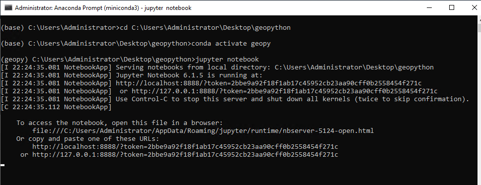

Setup
1. Get a Python client
We generally use and recommend Miniconda Python distribution: https://docs.conda.io/en/latest/miniconda.html. But feel free to use whatever one works for you (and the course materials). We will be using Miniconda3-py37_4.8.3.
You can get this specific version here for:
Follow the prompts (the default recommendations in the installer are generally fine.) Once installed, launch an “Anaconda Prompt” from the Start Menu / Applications Folder to begin your Python adventure.
2. Setup your Python environment (install required packages and libraries)
Next we need to set up an environment with all the additional packages and libraries we will be using throughout the course.
- Launch an Anaconda Prompt (or equivalent).
- Type in each of these commands sequentially. Each should take a minute or so to complete:
conda create -n geopy python=3.7
conda activate geopy
conda install pip
pip install numpy==1.18 pandas==1.0.1 matplotlib==3.3.2 pyshp==2.1.2 lasio==0.28 obspy==1.2.2 scipy==1.4.1 scikit-learn==0.23
conda install -c conda-forge cartopy=0.18
pip install tensorflow==2.3
python -m pip install "dask[complete]"
pip install jupyter==1.0 At anytime in the future you can install additional packages or create separate environments. We will discuss this more in the course. This particular environment should have the correct balance of versions with any dependencies accounted for.
Also, setup your workspace where we will be creating files and generating data, you can do this in your prompt (or just in Windows Explorer/OSX Finder). For me I will be working in top-level folder on my Desktop called geopython and a subdirectory called notebooks.
cd C:\Users\Administrator\Desktop\
mkdir geopython
cd geopython
mkdir notebooksNow you can type:
pythonto run a Python interpreter (type exit() to quit back to the terminal/prompt). We will be mostly using Jupyter Notebooks to interface with Python, so see the next section on how to launch a Notebook.
Launching the Jupyter/Python Notebook
Now you have built your environment with all the packages we need, you can launch it. As you just saw, typing Python into the terminal/command prompt runs the Python interpreter. But we will be working mostly with Python Notebooks. Each time you restart your work you will have to follow these steps:
- Launch an Anaconda Prompt (or equivalent).
- Change directories to your workspace.
- Activate the
geopyenvironment. - Launch the Jupyter/Python Notebook server.
cd C:\Users\Administrator\Desktop\geopython
conda activate geopy
jupyter notebook
This will launch the Notebook server (and may automatically launch a web-browser and take you to the page). If the Notebook does not automatically start, copy the generated link into a browser.

3. Download the data
Download the data (280 MB inflated to 500 MB) for all the exercises from here:
https://cloudstor.aarnet.edu.au/plus/s/IfOvRpOXhJyqTT0
Extract this to a directory you can work in. Your file tree should look like something like this

.
|-- geopython
| +-- notebooks
| +-- data
| | +-- ...
Other Options
Google Colab
If the above options do not work for you, Google Colab can be used for an on-demand Python notebook. You will require a Google Account for this.
The data is also availble on Google Drive here: https://drive.google.com/drive/folders/1b5TuOIZDhwf1UEMNQ0Jl5zDyn9dRwaRo?usp=sharing
And an example colab notebook (linking to that data) is here: https://colab.research.google.com/drive/1Uw78l8SDyRjdeanSvnsGayFWf_AJbZL1?usp=sharing
Docker
If you are familiar with Docker you may use our Docker image with something like:
sudo docker run -it -p 8888:8888 nbutter/geopy:latest /bin/bash -c "jupyter notebook --allow-root --ip=0.0.0.0 --no-browser"This will launch the Python notebok server in the /notebooks folder. Access the notebook by entering the genereated link in a web-browser, e.g.
http://127.0.0.1:8888/?token=9b16287ab91dc69d6b265e6c9c31a49586a35291bb20d0ab